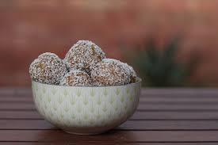

Home
Bourbon Balls - makes 4 dozen

These treats remind me of family gatherings around the holidays. I remember my mom always prepping a few batches before holiday parties at work, and never coming home with any leftover! These are packed with that intense bourbon flavor that sticks around long after your last bite, at least until you can get your hands on some more.
Ingredients:
- 60 vanilla wafers
- 1 cup sifted powdered sugar
- 2 Tablespoons unsweetened cocoa powder
- 1/4 cup bourbon
- 1/4 cup light corn syrup
- granulated sugar
Directions:
- Using a food processor or a plastic bag and a rolling pin, grind up the wafers until a consistent sand sized consistency.
- Combine crushed wafers with powdered sugar and cocoa.
- Stir in bourbon and corn syrup.
- Using your hands, form into 3/4 inch balls.
- Roll in granulated sugar until fully coated.